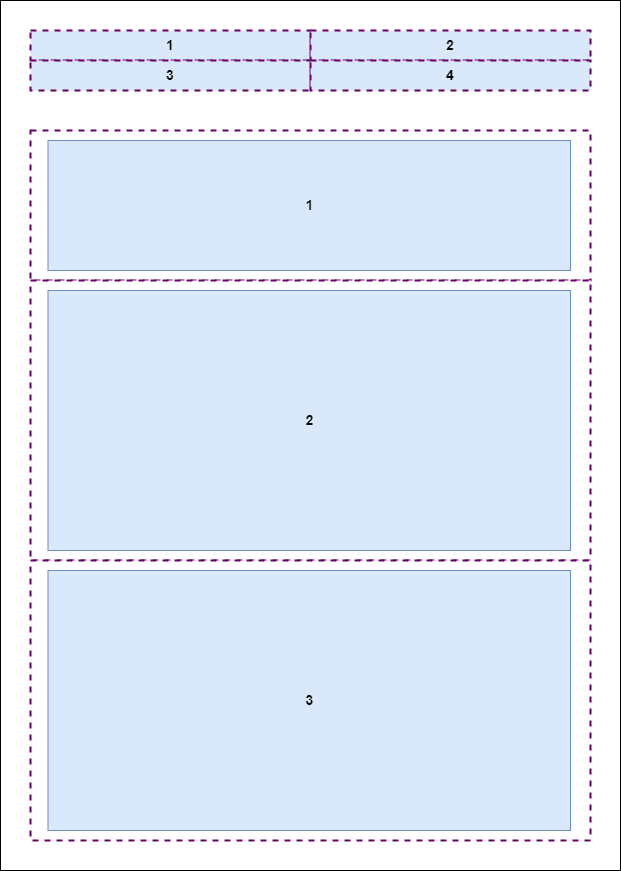

Tema 2. Grundlæggende web
Drinks opskrifter
Desktop view
media query (min-width: 951px)
- display: grid
- grid-template-columns: 1fr 1fr;
- nav bar (4x1)
- contents (2x2)
Mobile view

media query (max-width: 950px)
- display: flex
- flex-direction: column
- nav bar (2x2)
- contents (1x3)
I tema 2. Grundlæggende web, blev jeg introduceret til grundlæggende faglige begreber
indenfor design af digitale brugergrænseflader, digital indholdsproduktion,
digital kommunikation og responsivt webdesign.
Jeg lærte af sætte sider op i HTML og CSS,
ydermere lærte jeg at bruge photoshop til billedebehandling,
og opsætte tekst og billeder i Adobe XD.
Vi skulle i dette tema lave vores eget website, og her valgte jeg
at lave et website om drinks opskrifter.
Process:
Jeg startede med at finde ud af hvad mit website skulle omhandle,
derefter besluttede jeg mig for hvilke farver og hvilket tema jeg gerne ville køre igennem websitet.
Jeg valgte også selv at tage de fleste billeder til websitet.
Her planlagde jeg hvilke billeder der skulle tages og derefter redigerede jeg dem, så de kunne bruges.
Jeg brugte gestaltlovene, kontraster af farverne til mine billeder samt typografi til at style mit website med,
derudover brugte jeg basic HTML og CSS til at style selve koden og opbygge mit website,
derunder grid, padding og flexbox.
Til at gøre selve websiden responsivt brugte jeg media queries, som vi også blev introduceret til i dette tema.